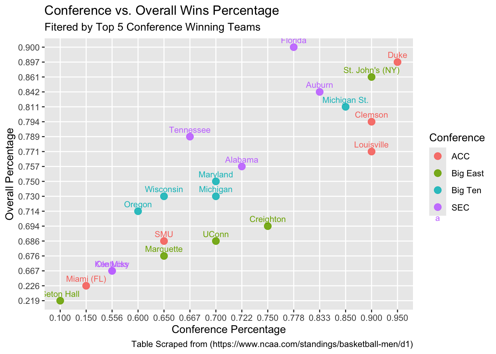

The following data was obtained from the NCAA’s website of the College Men’s Basketball Standings for the 2024-2025 season. The data used in this project was acquired in an ethical and friendly manner. We used the polite package to table scrape in a respectful manner, and we checked before scraping to ensure that the website allows scraping. We did not scrape any personal or confidential information from this site, and we did not overload the server while scraping.
The motivation behind this project stems from March Madness currently taking place. However, on a deeper level, we wish to understand the overall and conference differences in play for the NCAA College Men’s Basketball teams. To narrow our search down to have a more specialized look, we narrowed our focus down to the top five conferences that have won the most championships. However, due to the recent change of the PAC-12 being disbanded, with the most championships titles of 15, there are only four conferences present. This ranking of the championship title by conference was provided by ESPN.
There are a few questions that must be asked to investigate our main motivation. What is the relationship between conference performance and overall performance? How does conference play affect a team’s overall performance? What factors play into playing the outcome of conference and non-conference games? Is there a way to predict the NCAA championship tournament winner based off of their performances in overall and conference as well as accounting for the factors of past conference champions?
After accounting for the data being collected and tidied, there are several ways we would like to use this table to help begin to answer those questions. To start, we could demonstrate some simple analysis through plots as well as some statistical skills. These skills could include joining with another data set, checking correlations, and p-values. All of these things could help us to make a prediction for a potential March Madness winner based on the data found. These are just a few ways in which evaluating overall and conference performance could influence the conclusions we base off of the insights received.
Table Scraping
#check permission from provided urlrobotstxt::paths_allowed("https://www.ncaa.com/standings/basketball-men/d1")
[1] TRUE
#begin a session with the urlsession <-bow("https://www.ncaa.com/standings/basketball-men/d1", force =TRUE)#scrape the contents and convertresult <-scrape(session) |>html_nodes(css ="table") |>html_table(header =TRUE, fill =TRUE)head(result, n =1)
[[1]]
# A tibble: 19 × 17
School Conference Conference Conference Overall Overall Overall Overall
<chr> <chr> <chr> <chr> <chr> <chr> <chr> <chr>
1 "" W L PCT W L PCT STREAK
2 "Duke" 19 1 0.950 35 4 0.897 Lost 1
3 "Clemson" 18 2 0.900 27 7 0.794 Lost 2
4 "Louisville" 18 2 0.900 27 8 0.771 Lost 2
5 "SMU" 13 7 0.650 24 11 0.686 Lost 1
6 "Wake Fores… 13 7 0.650 21 11 0.656 Lost 1
7 "North Caro… 13 7 0.650 23 14 0.622 Lost 1
8 "Stanford" 11 9 0.550 21 14 0.600 Lost 1
9 "Georgia Te… 10 10 0.500 17 17 0.500 Lost 2
10 "Pittsburgh" 8 12 0.400 17 15 0.531 Lost 1
11 "Florida St… 8 12 0.400 17 15 0.531 Lost 1
12 "Virginia" 8 12 0.400 15 17 0.469 Lost 2
13 "Notre Dame" 8 12 0.400 15 18 0.455 Lost 1
14 "Virginia T… 8 12 0.400 13 19 0.406 Lost 3
15 "Syracuse" 7 13 0.350 14 19 0.424 Lost 1
16 "California" 6 14 0.300 14 19 0.424 Lost 1
17 "NC State" 5 15 0.250 12 19 0.387 Lost 1
18 "Boston Col… 4 16 0.200 12 19 0.387 Lost 4
19 "Miami (FL)" 3 17 0.150 7 24 0.226 Won 1
# ℹ 9 more variables: Overall <chr>, Overall <chr>, Overall <chr>,
# Overall <chr>, Overall <chr>, Overall <chr>, Overall <chr>, Overall <chr>,
# Overall <chr>
#Graph of Overall and Conference Percentage Evaluationncaa_bb |>group_by(conference) |>slice_max(order_by = overall_wins, n =5) |>ungroup() |>ggplot(aes(x = conference_pct, y = overall_pct, color = conference)) +geom_point(size =3, alpha =0.9) +geom_text(aes(label = team), hjust =0.5, vjust =-0.7, size =3) +labs(title ="Conference vs. Overall Wins Percentage",subtitle ="Fitered by Top 5 Conference Winning Teams", x ="Conference Percentage",y ="Overall Percentage",color ="Conference",caption ="Table Scraped from (https://www.ncaa.com/standings/basketball-men/d1)")

This scatterplot graph represents the relationship between overall percentage and conference percentage of wins and loses for a given team. For our analysis, we chose the top five winning teams from the selected conferences. From this, the colors represent these selected conferences while the teams are displayed above their respective statistics. From this graph, we can see that Duke for this season has the highest overall and conference winning percentage, while the other two teams in the selected conferences that represent the rank of one for this year’s championship tournament (Florida & Auburn) are of slightly lower percentage. This also brings up an interesting point as St. John’s has a higher percentage for both conference and overall and were seeded at a number two ranking. Without the results of this championship, this would suggest a solid point to the committee for the selection of these rankings. In addition, it appears that the Big East conference season for these selected five teams are on average to play at a lower level of overall and conference performance with one outlier being St. John’s, which could also weigh in on selection rankings as well. From this analysis, it is intriguing to see the relationship between the overall percentage and the conference percentage and how it may be able to inform real decisions and could perhaps be used as a tool for the perfect bracket.
Conclusion
In conclusion, this evaluation provides insights into future analysis that can and may be conducted when it comes to looking at overall and conference performance. It began with the table scraping methods that were used from the data of the NCAA’s website of the College Men’s Basketball Standings. From there, the use of cleaning the data and bringing this data into a clear and concise table to where further analysis can be conducted on it become pertinent. Through the use of plots, we further demonstrated that the relationship between overall performances and conference performances has intriguing insights when it comes to ranking selections. This analysis serves as an approach and can be used more in depth to help with the ranking selection as well as the prediction for brackets if used on a larger scale.
Sources:
NCAA College Men’s Basketball: https://www.ncaa.com/standings/basketball-men/d1 Accessed by: Tuesday, March 25 2025
NCAA College Men’s Basketball Championship Wins by Conference: https://www.espn.com/mens-college-basketball/story/_/id/39862064/which-ncaa-mens-conference-most-basketball-titles Accessed by: Tuesday, March 25, 2025
Label points(geom_text): index.html Accessed by: Wednesday, March 26, 2025